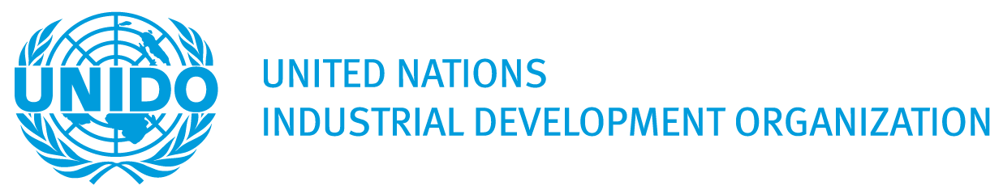

«Сприяння експорту екологічно стійких та соціально відповідальних товарів з України: стратегії та можливості»
«Сприяння експорту екологічно стійких та соціально відповідальних товарів з України: стратегії та можливості»
Дата та місце проведення
Дата: 18 квітня 2024 року
Місце проведення: Kazatsky Hotel/online (за попередньою реєстрацією)
Фасилітатор заходу: Тетяна Пирог
Мета - надати українським експортерам практичні інструменти для успішного виходу на міжнародні ринки та розширення експорту. Особлива увага буде приділена просуванню екологічно чистих та соціально відповідальних товарів, що сприятиме сталому розвитку торгівлі.
Порядок денний:
Час
Виступи
14:00 - 14:15
Вступ та огляд семінару
Короткий огляд основних цілей та завдань семінару.
Важливість екологічної стійкості та соціальної відповідальності в сучасному експорті.
14:15-15:30
Сесія 1: Пошук ринкових можливостей: використання практичних інструментів аналізу ринку
Максим Бєлозьоров/ Бізнес-тренер
• Визначення ключових тенденцій ринку: розмір ринку та його привабливість, клієнти та конкуренти.
• Аналіз торгових потоків та міжнародної статистики за допомогою інструментів, таких як Інструменти картографування торговельної статистики та репозиторії глобальних торговельних даних.
• Міжнародні вимоги як бар'єри та можливості: онлайн-платформи для інформації про доступ до ринку, інсайти торговельних угод та ресурси стандартів відповідності.
15:30-15:45
Коротка перерва на каву
15:45-17:15
Сесія 2: Використання сталого розвитку та соціальної відповідальності для проникнення на світовий ринок
Олена Галушко/ HRD, Assoc CIPD, ACC ICF
Максим Бєлозьоров/ Бізнес-тренер
• Культурна адаптація та різноманіття: ключі до успіху на міжнародному ринку
• Розуміння стійких продуктів та бізнесу: оцінка моделей споживання та впливу на зростання бізнесу.
• Навігація у вимогах до продукції на міжнародному ринку: розрізнення регуляторних мандатів та добровільних стандартів. Ілюстрація різноманітних галузевих стандартів
17:15-18:15
Сесія 3: Розробка стратегії та експортного плану на основі досліджень
Юлія Головчук/Експертка зі сталого розвитку та екологічних стандартів
Максим Бєлозьоров/ Бізнес-тренер
• Від дослідження до стратегії та плану: Розробка комплексного експортного плану з урахуванням ризиків та контрагентів.
• Розробка ефективної експортної стратегії 4P: Продукт (адаптація до потреб ринку), Промоція (маркетингові канали та комунікація), Розміщення (логістика та дистрибуція), Ціна (конкурентне ціноутворення).
• Впровадження принципів ESG (Екологія, Соціальний розвиток, Корпоративне Управління) на всіх етапах: стратегічне планування, розробка експортного плану, процеси due diligence (перевірка контрагентів) та ведення бізнесу.
18:15-18:25
Висновки семінару
• Узагальнення ключових висновків та подальших кроків.
• Надання інформації про додаткові ресурси та підтримка українських експортерів.
Спікери

Юлія Головчук
Експертка зі сталого розвитку та екологічних стандартів
Професійний досвід та експертиза: Експертка у сфері екологічного менеджменту з майже 20-річним досвідом, зосереджена на дотриманні екологічного законодавства у відношенні до викидів, забруднення, водовідведення, вуглецевого сліду та управління відходами. Володіє досвідом формулювання екологічних політик, процедур, впровадження кращих практик та оцінки впливу на довкілля, а також проведення внутрішніх аудитів, організації тренінгів для менеджерів та персоналу, звітності та співпраці з зовнішніми підрядниками. Активно спілкується з регулюючими та контролюючими органами. Є сертифікованим аудитором системи менеджменту відповідно до ISO 9001:2015, ISO 14001:2016, OHSAS 18001:2015, критичного мислення, комунікації та управління проектами.
Протягом своєї кар'єри співпрацювала з такими корпоративними структурами як "Укрзалізниця", "Кривий Ріг Цемент", "HeidelbergCement Ukraine", а також брала участь у проектах, спонсорованих "Dyckerhoff AG" та працювала в дизайн-проектних інститутах.
Освіта та навчання: Отримала освіту за спеціальністю "Екологія та захист навколишнього середовища" в Сумському державному університеті, після чого продовжила навчання в аспірантурі зі спеціалізацією "Екологічна безпека". Пройшла наукове стажування в кафедрі екологічної біотехнології Технологічного університету Сілезії в Глівіце, Польща.
Членство: Професійна асоціація екологів України.
Максим Бєлозьоров
Бізнес-тренер
Професійний досвід: експерт у сфері експортного консалтингу та стратегічного планування з більш ніж 20 років на керівних посадах у різних галузях, включаючи агробізнес та сектор здоров'я та краси. Максим Білозьоров має проєктний досвід у агробізнесі та експорті, включно з розробкою та веденням курсів з експортного бізнесу як бізнес-тренер у 2023 році в бізнес-школі «Нова Пошта», де покрив теми дослідження експортного ринку, підготовки до виходу на ринок, ризиків, фінансування та правових аспектів експорту. Він також виступав як тренер у Export Academy від Export Promotion Office у 2022 році та як бізнес-тренер з розвитку імпорту в Plaske Academy у 2021 році.
Освіта: : МВА з міжнародної торгівлі, Hochschule Anhalt / University of Applied Sciences (Німеччина), з відзнакою в стратегічному менеджменті. Отримав ступені в області фінансів та англійської/німецької філології в Державному Університеті Запоріжжя (Україна).
Керівні ролі: є засновником і керівником fruzbi.com. До цього він виконував обов'язки директора в Frutica LLC. Його професійний шлях також включає значний досвід роботи на керівних посадах у таких компаніях, як Konecranes Ukraine PJSC, MEA Metal Applications Ukraine LLC, та Dneprospetsstal JSC.


Олена Галушко
HRD Assoc CIPD ACC ICF
Професійний досвід: Значний досвід у сфері людських ресурсів, включаючи позиції HR менеджера в Jabil та керівника відділу персоналу в KPMG Ukraine. Спеціалізація на розробці та впровадженні програм навчання, підвищенні кваліфікації керівників і HR спеціалістів, участі в коучингових програмах для жінок-лідерів та студентів МВА. Активна участь у соціальних проектах і фрілансі.
Освіта: магістр з менеджменту непромислових організацій від Європейського Університету Києва, сертифікований HR OD практик від AIHR, сертифікати з People Analytics та Change Agility від Josh Bersin Academy, асоційований сертифікований коуч (ACC) Міжнародної федерації коучингу.
Ліцензії та сертифікати: Володіє численними сертифікатами, включаючи Certified HR OD Practitioner, сертифікати від TTI Success Insights Ukraine з аналізу поведінки, мотивації та TriMetrix аналізу, а також сертифікатом HR в епоху ШІ від Josh Bersin Academy.
Формат:
Цей семінар проходитиме у гібридному форматі, що дозволить учасникам обирати між особистим або онлайн-відвідуванням через платформу для відеоконференцій Zoom. Ми забезпечимо якісну трансляцію та можливість активної участі для онлайн-учасників.
Тривалість:
4 години 15 хвилин
Переваги для учасників Воркшопу 2:
Учасники семінару «Сприяння експорту екологічно стійких та соціально відповідальних товарів з України: стратегії та можливості» зможуть отримати ґрунтовні знання та практичні навички, серед яких:
• Узагальнення знань та практичних навичок: Учасники матимуть можливість розширити свої знання у сфері експорту та опанувати практичні інструменти, які допоможуть їм знайти ринкові можливості, проаналізувати статистику та відповідні стандарти.
• Розвиток стратегічного мислення: Учасники матимуть можливість навчитися розробляти експортні стратегії на основі маркетингових досліджень та аналізу, включаючи врахування екологічних та соціальних стандартів.
• Збагачення підприємницького досвіду: Завдяки нетворкінгу з експертами та іншими учасниками учасники зможуть обмінятися досвідом та найкращими практиками у сфері сталого експорту.
• Тренінг з принципів екологічної стійкості та соціальної відповідальності: Учасники отримають уявлення про важливість збереження природних ресурсів та соціальної справедливості в контексті експортних операцій.
• Доступ до додаткових ресурсів та підтримки: Учасники отримають інформацію про додаткові ресурси та підтримку, яка допоможе їм рости та розвиватися у сфері міжнародного експорту.
Цей семінар забезпечить учасників цінними знаннями, інструментами та підтримкою, необхідними для успішної реалізації сталих експортних стратегій та розвитку їх бізнесу на міжнародних ринках.